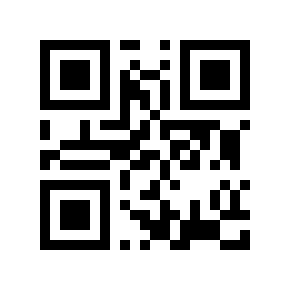
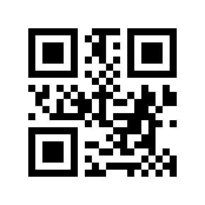
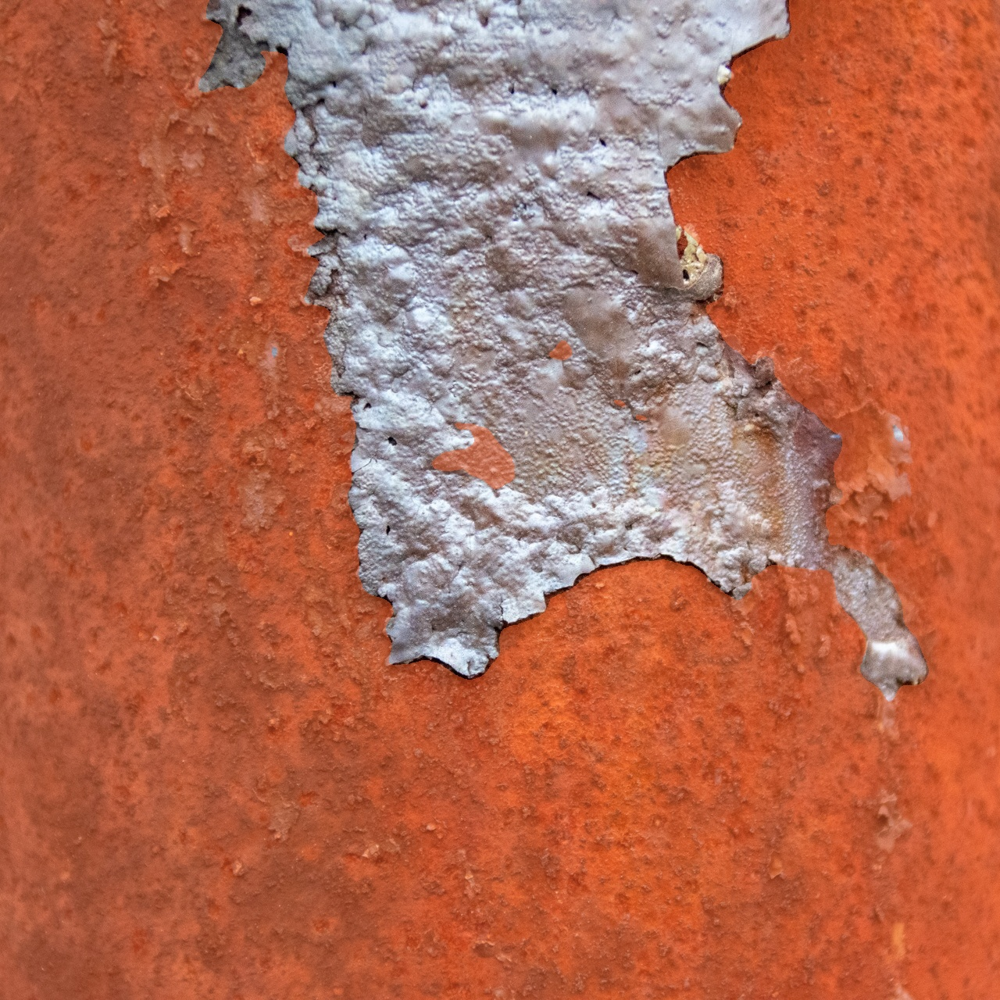
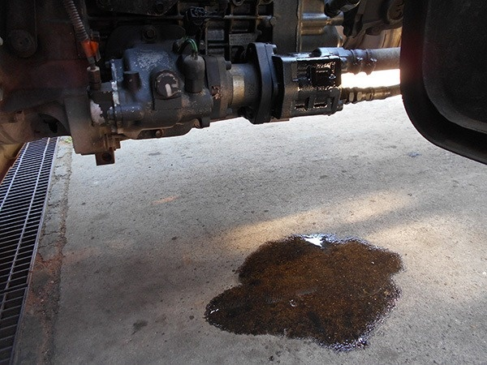
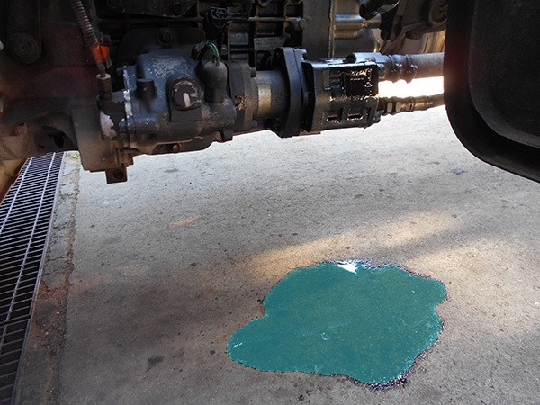
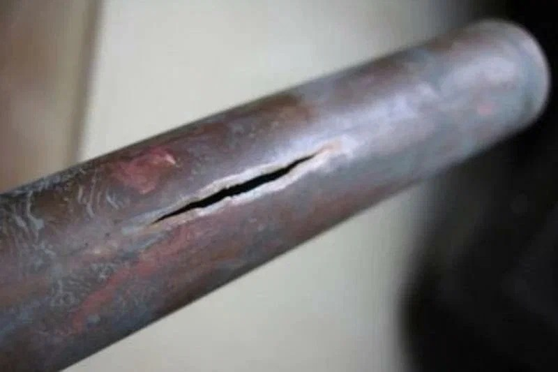

Как сканировать
- На ПК откройте «Подключить телефон.html». Обычной камерой телефона отсканируйте QR из раздела «Быстрый запуск со снимками».
- На ПК откройте эту страницу. На телефоне нажмите «Сфотографировать QR» и снимите один из кодов насоса ниже. Также можно выбрать насос из списка.
- Нажмите «Снять оборудование» и сделайте снимок. Для повторения примера используйте исходное фото из галереи, если системный диалог позволяет выбрать файл.




Ржавчина
Оранжевым выделена область возможной коррозии.


Масло
Бирюзовым выделен участок, похожий на след масла.



Трещины
Розовым показана возможная трещина. YOLO проверяет трещины при каждом осмотре.
